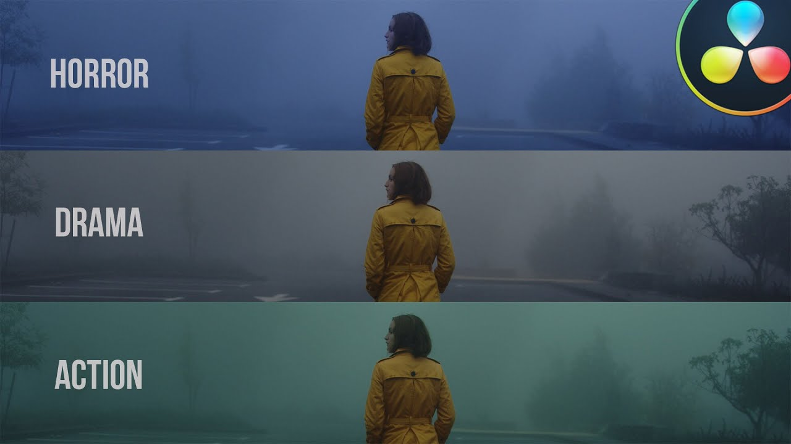
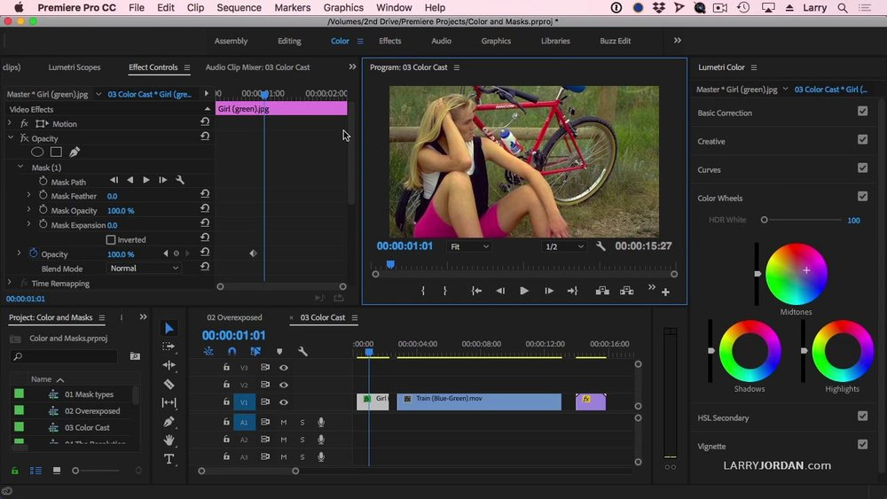

What is Color Grading?
Color grading is how you enhance or alter the color of a motion picture, video image, or still image. It’s how videographers adjust the colors of their footage to achieve a visual mood or tone.
Color grading was once called color timing, a process done manually while developing actual film. Color adjustments were made by manipulating how long the film was exposed to the different developing solutions. While the term color grading refers to the whole process of adjusting the color from the source file to the final output, the process is split into two parts:
Color correction: The process of adjusting the basic color and white balance, exposure, and contrast to be consistent from shot to shot.
Color grading: Once the color has been corrected, the footage can be color graded to fine tune the colors and create a specific look.
How to Color Grade
Normalize Your Video Clips
The first step should be to normalize your video clips. You need to fix the contrast and saturation in order to take advantage of all of the information recorded. It’s possible to do this process manually, or you can use a technical LUT to simplify your workflow.
Perform Video Color Correction

Once your clips have been normalized, you need to color correct the video. Try to get the video clips as “correct” as possible. If your exposure is bad, contrast is missing, or white balance is off, the actual color grading will be far more difficult.
Color Grade Your Footage
Once your color correction is completed, you can then color grade your footage. Again, this step can be done either manually or with a LUT. Doing it manually will provide you the most control but could take longer. Using a creative LUT can save time and add consistency, but only if all of your clips are color corrected well.
Perform Final Color Adjustment
As with any automated method, LUTs are likely to not be perfect. For example, they might give everything too much of a certain color tint. After adding your LUT, go back through, correct any problems, and ensure consistency across all of your clips.